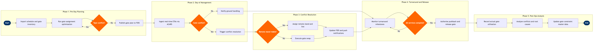

Gate Management & Assignment
Ground Operations & Airport Services › Airport & Gate Management · 18 L4 steps · 5 phases · 4 decision gates · Updated 2026-10-01 20:52
📊
Process Flow Diagram (BPMN)

📋
L4 Process Steps
| Step | Step Name | Role / Swim Lane | System | Input | Output | KPI | Dec? | Exc? |
|---|---|---|---|---|---|---|---|---|
Phase 1 1.1 |
Import scheduled movements & gate inventory | Gate Planning Analyst | SITA Airport Management System (AMS) | SSIM schedule export, airport gate inventory with wingspan & equipment constraints | Flight movement list with time windows loaded into AMS | Gate plan build initiated ≥18h before day of operations; 100% of scheduled movements imported | N | N |
| 1.2 | Execute automated gate assignment optimisation | Gate Planning Analyst | SITA AMS Gate Optimizer | Flight movement list, terminal zone rules, contact-stand preference list | Draft gate assignment plan covering all scheduled movements | ≥92% of flights auto-assigned without manual intervention; optimisation run time <10 min | N | N |
| 1.3 | Validate assignments against aircraft type constraints | Gate Planning Analyst | SITA AMS + Airline Fleet Database | Draft gate assignment plan, aircraft type per flight leg from PSS | Validated gate assignment list; flagged mismatches routed for manual resolution | 0 gate/aircraft-type mismatches published; validation complete ≥14h before operations day | Y | Y |
| 1.4 | Coordinate gate pre-conditioning with terminal ops | Terminal Operations Coordinator | Airport Collaborative Decision Making (A-CDM) Portal | Validated gate plan, cleaning and catering subcontractor schedules | Confirmed gate readiness schedule aligned with ground handler SLAs | Gate confirmed ready ≥30 min before scheduled arrival; pre-conditioning exceptions <5% | N | N |
| 1.5 | Publish gate plan to FIDS and stakeholder systems | Gate Planning Analyst | SITA FIDS + A-CDM Portal | Confirmed gate assignment plan | Gate assignments published to passenger displays, ground handler portals, and crew bus scheduler | Published ≥12h before day of operations; 100% of gates reflected in FIDS within 90 seconds of publish | N | N |
Phase 2 2.1 |
Ingest real-time flight status via ACARS | Airport Operations Controller | SITA ACARS + SITA AMS | ACARS block-off/estimated arrival messages, ATC slot data, weather NOTAMs | Updated ETA per inbound flight refreshed in AMS every 5 minutes | ETA refresh cycle ≤5 min; ETA data completeness ≥97% of active flights | N | Y |
| 2.2 | Confirm or revise gate assignments from updated ETAs | Airport Operations Controller | SITA AMS | Updated ETAs, current gate occupancy status in AMS | Confirmed or revised gate assignment; conflict alert generated if overlap detected | Gate confirmed ≥60 min before scheduled arrival; <5% of gates reassigned day-of | Y | Y |
| 2.3 | Notify ground handling of confirmed gate assignments | Airport Operations Controller | A-CDM Portal + SITA AMS Messaging | Confirmed gate assignments | Notifications dispatched to ground handler, fueller, caterer, and crew bus scheduler | Notification sent ≥45 min before arrival; stakeholder acknowledgement rate ≥95% | N | N |
Phase 3 3.1 |
Detect gate conflict from delay or early arrival | Airport Operations Controller | SITA AMS Conflict Alerting | Real-time gate occupancy data, inbound ETA stream | Conflict alert with affected flight pair, overlap duration, and time to arrival | Conflict detected ≥45 min before arrival; 0 aircraft held on apron >15 min due to gate unavailability | Y | N |
| 3.2 | Assess remote stand and bus bridge feasibility | Airport Operations Controller | SITA AMS + Ground Transport Management System | Conflict alert, remote stand inventory, airside bus availability | Remote stand feasibility decision with estimated passenger transfer time | Decision made within 10 min of conflict detection; remote stand option assessed for 100% of conflict alerts | Y | Y |
| 3.3 | Execute gate swap or remote stand assignment | Airport Operations Controller | SITA AMS | Feasibility decision, available contact gate or remote stand ID | Revised gate/stand assignment confirmed in AMS and pushed to all connected systems | Gate swap communicated to all parties within 5 min of decision; AMS record updated within 60 seconds | N | N |
| 3.4 | Update FIDS, departure boards, and airline mobile app | Airport Operations Controller | SITA FIDS + Amadeus Altéa PSS API + A-CDM Portal | Revised gate assignment from AMS | Updated passenger-facing displays and push notifications via airline mobile app | FIDS updated within 2 min of gate change; mobile app push notification delivered within 3 min | N | N |
Phase 4 4.1 |
Monitor aircraft block-on time and turnaround milestones | Ramp Operations Supervisor | SITA AMS + SITA ACARS | ACARS block-on timestamp, A-CDM turnaround milestone checklist | Real-time turnaround status dashboard with milestone completion percentage | Block-on captured within 2 min of actual; on-time departure (D0) ≥78% | N | N |
| 4.2 | Validate all ground services complete before release | Ramp Operations Supervisor | SITA AMS Turnaround Manager + Ground Handling System | Fuelling confirmation, catering upload complete, baggage loaded, cabin clean signed off | Go/No-Go decision for pushback authorisation | All services signed off ≥10 min before STD; late-service exception rate <3% of turns | N | Y |
| 4.3 | Authorise pushback and release gate in AMS | Ramp Operations Supervisor | SITA AMS + Apron Control VHF Radio | Go clearance from all service streams, apron traffic status from Apron Control | Pushback authorisation transmitted; gate status set to Available in AMS | Gate released within 5 min of block-off; gate turnaround time ≤planned TAT per aircraft type | N | Y |
Phase 5 5.1 |
Record and warehouse actual gate utilisation times | Airport Performance Analyst | SITA AMS + AWS Redshift Data Warehouse | Block-on/off timestamps, gate occupancy records, planned vs. actual gate assignments | Actual vs. planned gate utilisation report loaded to Redshift | Data completeness ≥99% of movements; report available within 2h of operations day close | N | N |
| 5.2 | Analyse gate conflict frequency and root causes | Airport Performance Analyst | AWS Redshift + Tableau | Gate utilisation report, conflict log, delay attribution data from OTP system | Root cause analysis report with recurring conflict patterns and improvement recommendations | ≥80% of recurring gate conflicts identified with actionable root cause within 48h of operations day | N | N |
| 5.3 | Update gate constraint and master data in AMS | Gate Planning Analyst | SITA AMS Master Data Management | Root cause findings, updated aircraft type assignments, revised ground equipment specs | Updated gate constraint library effective for next scheduling cycle | Master data update cycle ≤7 days from change identification; 0 gate conflicts caused by stale constraint data in rolling 90-day window | N | N |
📋